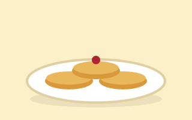

Український борщ
Насичений червоний борщ зі сметаною.
Кулінарний блог про прості домашні страви
Тут зібрано три рецепти, які я готую вдома найчастіше. Кожен рецепт містить список інгредієнтів і покрокове приготування.
Насичений червоний борщ зі сметаною.

М’яке тісто та ніжна начинка.

Золотаві сирники до сніданку.